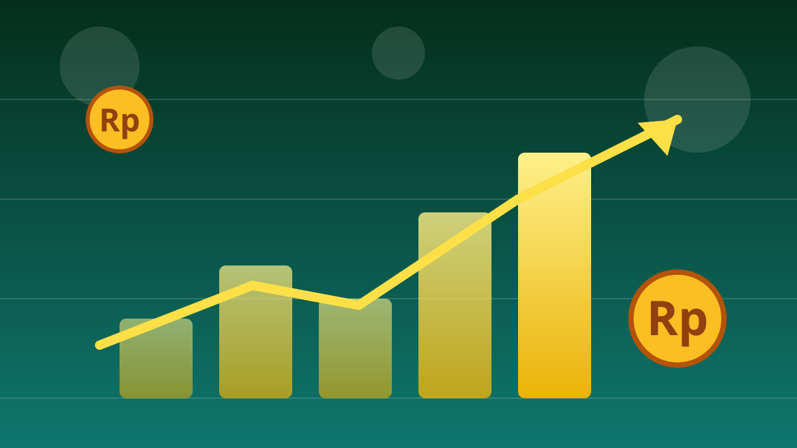

1 / 7

💰 EKONOMI
Pajak Otomatis Buat Seller Online
Sejak 1 Oktober, marketplace langsung motong pajak dari tiap penjualan. Geser buat detailnya →
2 / 7
🛒
Apa yang berubah?
Sejak 1 Oktober 2026, marketplace memungut Pajak Penghasilan (PPh) Pasal 22 dari penghasilan pedagang dalam negeri. Potongannya otomatis jalan di setiap transaksi.
Aturannya berpayung pada PMK 37 Tahun 2025, diumumkan resmi lewat siaran pers DJP No. SP-23/2026 pada 1 Oktober lalu.
3 / 7
💸
Potongannya 0,5% dari omzet
Besarnya 0,5 persen dari peredaran bruto alias omzet pedagang — tidak termasuk PPN. Gampangannya: jualan Rp1 juta, otomatis kepotong Rp5 ribu.
Pungutan ini bisa dikreditkan sebagai bagian dari pelunasan pajak tahunan, jadi bukan "uang hilang" tanpa jejak.
4 / 7
🏢
4 platform jadi pemungut
DJP menunjuk empat penyelenggara perdagangan elektronik sebagai pemungut, lewat Keputusan Direktur Jenderal Pajak tanggal 24 September 2026.
Keempatnya: Shopee, Tokopedia, Blibli, dan Lazada — platform yang paling sering lo buka kalau belanja online.
5 / 7
✅
Siapa yang aman dari potongan?
Pedagang orang pribadi dengan omzet sampai Rp500 juta dalam satu tahun pajak dikecualikan — sepanjang menyampaikan surat pernyataan sesuai ketentuan.
Jadi buat seller kecil-kecilan yang baru merintis, tetap ada jalan aman. Pastiin dokumen lo lengkap ya.
6 / 7
❓
Ini pajak baru?
Kata Dirjen Pajak Bimo Wijayanto: bukan. Ini cuma perubahan mekanisme pemungutan atas kewajiban pajak yang memang sudah ada — biar sama rata antara jualan di toko fisik dan online.
FYI: implementasinya sebenarnya dimajukan. Awalnya ditunda sampai 31 Oktober 2026, tapi sistem platform dinilai sudah siap, jadi mulai 1 Oktober.
7 / 7
🤔
Efeknya ke lo apa?
Buat pembeli: biaya pajak bisa aja ditembak ke harga barang — jadi wajar kalau harga di marketplace perlahan naik dikit.
Buat yang jualan online atau punya side hustle dropship/reseller: catat baik-baik angka 0,5% ini ke perhitungan margin lo. Omzet di bawah Rp500 juta/tahun? Segera urus surat pernyataan biar nggak ikut kepotong.